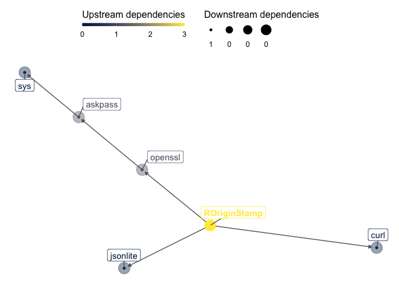

ROriginStamp - a simple interface to OriginStamp ================


For the documentation see https://rkrug.github.io/ROriginStamp/ # Dependencies
This package aims at minimizing the number of dependencies It has at the moment only three direct dependencies, which are not avoidable as curl (Ooms 2019) is used to access the OriginStamp API, openssl (Ooms 2020) to calculate the hashes, and jsonlite (Ooms 2014) to encode and decode the API communications. The dependency graph looks as followes:

This packages allows to obtain Trusted Timestamps (TTS) from OriginStamp for R objects and files. To obtain the TTS, the sha256 hashes are calculated and submitted to OriginStamp
Background
What are Trusted Timestamps?
From Wikipedia
Trusted timestamping is the process of securely keeping track of the creation and modification time of a document. Security here means that no one—not even the owner of the document—should be able to change it once it has been recorded provided that the timestamper’s integrity is never compromised.
This allows you, “to prove that youare the originator of certain information at a given point in time” (from OriginStamp documentation).
Examples are to prof that you generated the data at a given time, proof that you had the data before anybody else, etc.
How is it done
I will cite from the OriginStamp documentation:
OriginStamp is a web-based, trusted timestamping service that uses the decentralized blockchain to store anonymous, tamper-proof time stamps for any digital content. OriginStamp allows users to hash files, emails, or plain text, and subsequently store the created hashes in the blockchain as well as retrieve and verify time stamps that have been committed to the blockchain. OriginStamp is free of charge and easy to use.
A detailed description on how their approach works, can also be found in their documentation.
Prerequisites
Before you can use the package, you have to get an API key from OriginStamp. For details, see their Get anAPI key documentation.
Installation
ROriginStamp is momentarily only available on github, so you have to install it by using devtools:
if (!require(devtools)) {
install.packages("devtools")
library(devtools)
}
devtools::install_github("rkrug/ROriginStamp")